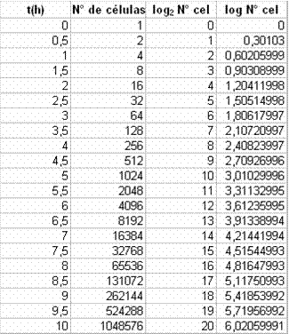
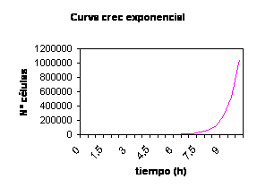
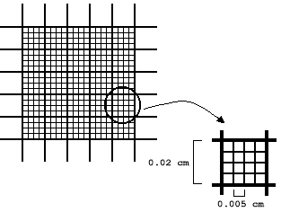
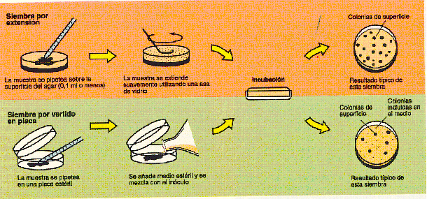
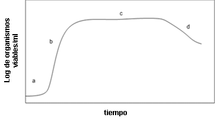
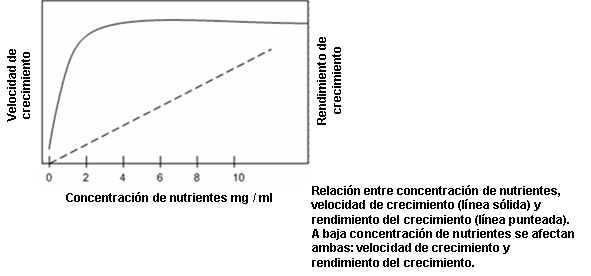
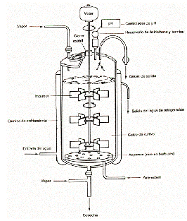
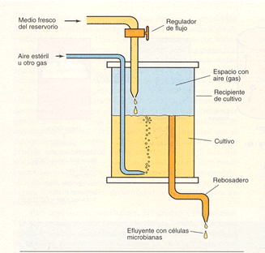

La célula bacteriana es esencialmente una maquinaria de síntesis capaz de duplicarse a sí misma. El proceso de síntesis para el crecimiento bacteriano involucra unas 2000 reacciones químicas de una amplia variedad. Una vez sintetizados los polímeros, el crecimiento continúa con el ensamblaje y formación de nuevas estructuras celulares que finalizan con la división en dos células hijas. En un medio apropiado física y nutricionalmente, un cultivo se reproduce continuamente como células vegetativas, los nutrientes absorbidos y metabolizados permiten crecer al microorganismo.
II.- CONCEPTOS BÁSICOS
Un experimento de crecimiento hipotético empezando con una simple célula, teniendo un tiempo de generación de 30´ se presenta en la siguiente tabla:


III.- FACTORES QUE INFLUYEN EN EL CRECIMIENTO
IV.- MEDIDA DEL CRECIMIENTO MICROBIANO
Se mide por cambios sucesivos en el número de células o por el peso de la masa de las células. Existen varios métodos para contar las células o estimar la masa de éstas.
Limitaciones:
- Es muy tedioso, no es práctico para un gran número de muestras
- No es muy sensible, se necesitan al menos 106 bact/ml para que sean observadas al microscopio
- No distinguen células vivas de muertas


Si analizamos el crecimiento microbiano en el tiempo, éste describe una típica curva de crecimiento que puede ser dividida en fases distinguibles. La curva de crecimiento puede dividirse en diversas fases: fase lag, fase exponencial, fase estacionaria y fase de muerte.

a) Fase lag o de retraso
Cuando una población microbiana es inoculada en medio fresco, el crecimiento generalmente no principia de inmediato sino después de un cierto tiempo, llamado fase lag que puede ser breve o largo, dependiendo de las condiciones. Si un cultivo que crece exponencialmente es inoculado al mismo medio bajo las mismas condiciones de crecimiento no se observa la fase lag y el crecimiento exponencial continúa a la misma velocidad. Sin embargo, si el inóculo se toma de un cultivo viejo (fase estacionaria) y se inocula en el mismo medio, generalmente se presenta la fase lag, aún cuando las células del inóculo estén vivas. Esto se debe a que las células generalmente agotan diferentes coenzimas esenciales u otros constituyentes celulares y se requiere de cierto tiempo para su resíntesis. Un retraso también se presenta cuando el inóculo está formado por células dañadas (pero, no muertas) por tratamientos con calor, radiación o sustancias químicas, debido al tiempo necesario para que las células puedan reparar dicho daño. También se observa cuando una población se transfiere de un medio de cultivo rico a uno pobre. Esto sucede debido a que para que continúe el crecimiento en un medio de cultivo en particular, es necesario que las células tengan un complemento íntegro de enzimas para la síntesis de los metabolitos esenciales que no están presentes en dicho medio.
Cuando se les transfiere a un medio diferente, se requiere cierto tiempo para la síntesis de nuevas enzimas Es una fase de preparación y adaptación al medio, su duración depende del medio de cultivo y el estado fisiológico de las células vivas
b) Fase exponencial
Es una consecuencia del hecho de que cada célula se divide para formar dos células, cada una de las cuales también se divide para formar dos células más y así sucesivamente. La mayor parte de los organismos unicelulares crecen exponencialmente. La velocidad de crecimiento exponencial varía mucho de un organismo a otro. Por ejemplo: Salmonella typhi crece muy rápidamente en cultivo, con un tiempo de generación de 20 – 30 ‘, Mycobacterium tuberculosis, crece muy lentamente, con sólo una o dos duplicaciones por día. Las condiciones ambientales, T°, composición del medio de cultivo, afectan a la velocidad de crecimiento exponencial así como las características del microorganismo.
En general, las bacterias crecen con mayor rapidez que los organismos eucariotas y los eucariotas pequeños se desarrollan más aprisa que los grandes Cada célula que se divide en dos. La tasa de crecimiento es exponencial.
c) Fase estacionaria
El crecimiento exponencial se detiene, los nutrientes indispensables se agotan, no hay incremento o decremento en el número de células o masa, hay limitación de nutrientes y acumulación de sustancias tóxicas. Los microorganismos son fisiológicamente activos y viables. En un sistema cerrado no se puede llevar a cabo indefinidamente el crecimiento exponencial
d) Fase de muerte
Si la incubación continúa después que una población alcanza la fase estacionaria, las células pueden seguir vivas y continuar metabolizando, pero lo más probable es que mueran. Si esto último sucede, la población se encuentra en la fase de muerte. Durante esta fase, el conteo microscópico directo puede permanecer constante pero la viabilidad disminuye lentamente. En algunos casos, la muerte se acompaña por lisis celular, dando lugar a una disminución del conteo de viabilidad.
VI.- EFECTO DE LA CONCENTRACIÓN DE NUTRIENTES
La concentración de nutrientes puede afectar tanto a la velocidad de crecimiento como al rendimiento del crecimiento de un microorganismo. A concentraciones muy bajas de nutrientes, la velocidad de crecimiento se reduce, mientras que a niveles moderados y altos de nutrientes llega a ser máxima. Si la concentración aumenta aún más la tasa de crecimiento no se modifica La dependencia de la tasa de crecimiento con la concentración de nutrientes fue descrita por J. Monod en 1950 y recuerda la cinética enzimática establecida por la ecuación de Michaelis & Menten. La concentración de nutrientes afecta la tasa de crecimiento microbiano y el rendimiento en masa de los microorganismos. A una tasa máxima de crecimiento, el incremento en la concentración de nutrientes da lugar a un aumento en la biomasa total a cosechar.

VII.- CULTIVO EN LOTE (BATCH)
Es el crecimiento de microorganismos en un volumen fijo de nutrientes que continuamente es alterado hasta su agotamiento por el crecimiento. Se realiza sin intercambio de materia con los alrededores. Este sistema ofrece como principal característica su simpleza, tanto desde el punto de vista de equipo necesario como de su operación. Al mismo tiempo, esta modalidad de cultivo presenta limitaciones, como la falta de control sobre diversos parámetros del cultivo y el hecho que las células se desarrollan en un estado fisiológico poco definido y cambiante.

VIII.- CULTIVO CONTINUO
Es un sistema de flujo de volumen constante al que se le agrega continuamente medio y del cual sale un dispositivo que permite la eliminación constante del medio excedente. Puesto que un sistema de este tipo se encuentra en equilibrio, el número de células y su estado nutritivo permanecen también constantes, considerándose entonces que el sistema se encuentra en un estado estable. El dispositivo más frecuente para cultivo continuo es el llamado quimiostato.
IX.- QUIMIOSTATO
Es el dispositivo más comúnmente usado para cultivo continuo. Su diseño y manejo permite el control de la densidad de la población y de la tasa de crecimiento del cultivo. Consiste básicamente en un tanque agitado que opera con dos elementos de control: la tasa de flujo y la concentración de un nutriente limitante tal como la fuente carbonada o nitrogenada. Los demás nutrientes en el medio se encuentran en exceso y junto al nutriente esencial determinado como factor limitante son aportados al tanque continuamente desde un reservorio, al mismo tiempo que se saca del recipiente el exceso de organismos y de medio. En el quimiostato, la tasa de crecimiento se controla por la tasa de flujo o la tasa de dilución (velocidad a la que se bombea el medio en el tiempo), mientras que la densidad de la población está controlada por la concentración del nutriente limitante. Si la tasa de dilución se incrementa y la concentración de nutrientes es constante, la densidad de la población es constante y la tasa de crecimiento se elevará. El nutriente limitante será completamente usado en estas condiciones. Si la tasa de dilución se eleva muy alto, los microorganismos pueden ser removidos en su totalidad fuera del recipiente antes de que se reproduzcan dado que la velocidad de flujo superaría a la velocidad de crecimiento. Cuando el sistema está en equilibrio, el número de células (densidad de la población) y el estado nutricional permanecen constantes, a esto se le conoce como “estado estable” o “estado sostenido”.
